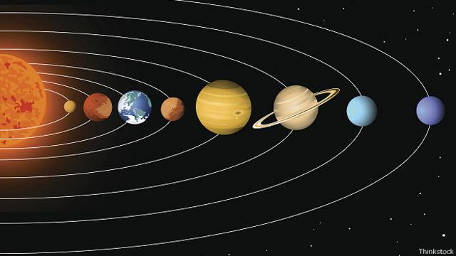

Со́нячна систе́ма (або Со́нцева систе́ма) — планетна система, що включає в себе центральну зірку — Сонце , і всі природні космічні об'єкти, що обертаються навколо Сонця. Довгий час, будуючи припущення щодо устрою Чумацького Шляху, вчені орієнтувались саме на Сонячну систему, однак останніми десятиріччями, з відкриттям нових типів зірок (таких як пульсари) й екзопланет ця думка спростована. Сонячна система є системою гравітаційно пов'язаних небесних тіл, що складається з центрального масивного тіла – Сонця, восьми великих планет, які рухаються навколо нього: Меркурій, Венера, Земля, Марс, Юпітер, Сатурн, Уран, Нептун, понад 100 їх супутників, поясу астероїдів та поясу Койпера, які складаються з метеоритної речовини, пилу та комет. Пояс Койпера, який містить близько 70-100 тис. об'єктів ~100 км у діаметрі, виявлено у 1992-2000 рр. завдальшки 30-50 а.о. від Сонця, зокрема Плутон, який 26 Генеральна асамблея Міжнародного астрономічного союзу 2006 р. виключила зі складу планет. Головна роль у Сонячній системі належить Сонцю. Його маса приблизно в 750 разів перевищує масу всіх інших тіл, що входять до системи. Гравітаційне тяжіння Сонця є визначальною силою для руху всіх тіл Сонячної системи, які обертаються навколо нього. Середня відстань від Сонця до найдальшої від нього планети Нептун становить 30 а.о., тобто 4,5 млрд км, що дуже мало в порівнянні з відстанями до найближчих зір. Тільки деякі комети віддаляються від Сонця на 1015 а.о. і можуть відчувати істотний вплив тяжіння інших зір. За сучасними уявленнями Сонце й Сонячна система утворилися близько 4,6 млрд. років тому внаслідок гравітаційного стискання хмари міжзоряного газу й пилу. Більша частина маси об'єктів, пов'язаних із Сонцем гравітацією, міститься у восьми відносно відокремлених планетах, що мають майже кругові орбіти й розташовані в межах майже плоского диска — площині екліптики. Чотири менші внутрішні планети: Меркурій, Венера, Земля та Марс, звані також планетами земної групи, складаються в основному з силікатів та металів. Чотири зовнішні планети: Юпітер, Сатурн, Уран та Нептун, звані також газовими гігантами, значною мірою складаються з водню та гелію та набагато масивніші, ніж планети земної групи. У Сонячній системі є дві ділянки, заповнені малими тілами. Пояс астероїдів, що розташований між Марсом і Юпітером, за складом подібний до планет земної групи, оскільки складається переважно з силікатів і металів. Найбільшими об'єктами поясу астероїдів є Церера, Паллада та Веста. За орбітою Нептуна розташовано транснептунові об'єкти, що складаються з замерзлої води, аміаку та метану, найбільшими з яких є Плутон, Седна, Хаумеа, Макемаке та Ерида. Додатково до тисяч малих тіл у цих двох ділянках є інші популяції різноманітних дрібних тіл, таких як комети, метеороїди та космічний пил, що рухаються навколо Сонця. Шість із восьми планет та три карликові планети мають природні супутники. Кожна з зовнішніх планет оточена кільцями пилу та інших частинок. Сонячний вітер (потік плазми від Сонця) створює міхур в міжзоряному середовищі, який називається геліосферою, який простягається до краю розсіяного диска. Гіпотетична хмара Оорта, що служить джерелом довгоперіодичних комет, може сягати на відстань приблизно в тисячу разів більшу порівняно з геліосферою. Сонячна система входить до складу Чумацького Шляху. Під час руху в Галактиці, Сонячна система час від часу потрапляє до міжзоряних газопилових хмар. Внаслідок високої розрідженості речовини цих хмар занурення Сонячної системи в хмару може виявитися лише в невеликому поглинанні й розсіюванні сонячних променів. Вплив цього ефекту в історії Землі наразі не встановлено. Сонячна система, як і будь-яка система, що обертається, має момент кількості руху (МКР). Головна частина його (близько 90%) пов'язана з орбітальним рухом навколо Сонця масивних Юпітера й Сатурна. Осьове обертання Сонця становить лише 2% МКР усієї Сонячної системи, хоча маса Сонця становить понад 99,8% загальної маси. Такий розподіл МКР між Сонцем і планетами пов'язано з повільним обертанням Сонця й величезними розмірами планетної системи — її поперечник у кілька тисяч разів більший поперечника Сонця. Планети набули МКР в процесі утворення системи: він перейшов до них від тієї речовини, з якої вони утворилися[Джерело?]. Усі великі планети — Меркурій, Венера, Земля, Марс, Юпітер, Сатурн, Уран і Нептун — обертаються навколо Сонця в одному напрямку (у напрямку осьового обертання самого Сонця), майже круговими орбітами, площини яких мають невеликий нахил одна до одної (і до площини сонячного екватора). Площину земної орбіти — екліптику — вважають основною площиною для відліку нахилу орбіт планет та інших тіл, що обертаються навколо Сонця. Відстані в сонячній системі зазвичай вимірюють в астрономічних одиницях — середня відстань від Землі до Сонця, що приблизно дорівнює 150 млн км. 
{kind=link}